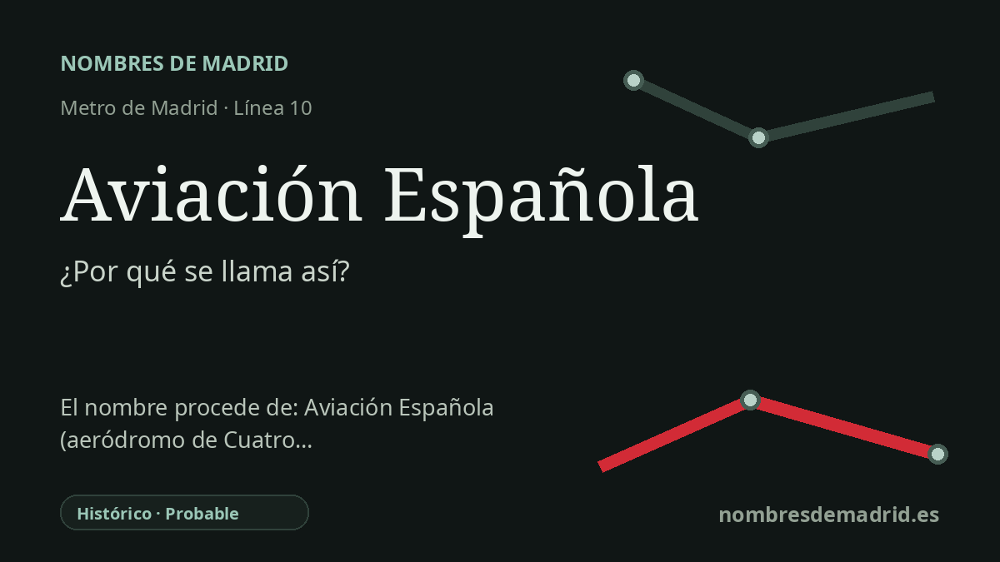

Publicado el · Investigación de Nombres de Madrid · Cómo verificamos cada origen · 7 fuentes consultadas
Respuesta rápida
Aviación Española alude a la identidad aeronáutica de esta zona de Latina, junto a los antiguos terrenos militares de Campamento y cerca del histórico aeródromo de Cuatro Vientos. La fuente contemporánea más directa dice que el nombre homenajeaba a los antiguos cuarteles de Aviación.
La historia del nombre
El nombre de la estación, **Aviación Española**, alude literalmente a la aviación de España. Para explicar su etimología pública, la fuente directa más sólida no apunta a un vuelo concreto ni a una persona, sino a la identidad aeronáutica del entorno: los antiguos terrenos militares de Campamento, la avenida de la Aviación y el cercano aeródromo de Cuatro Vientos. Al inaugurarse la estación en 2006, El País explicó que el nombre era un homenaje a los cuarteles de Aviación de Campamento.
Aquellos cuarteles formaban parte de un paisaje militar y aeronáutico más amplio en el suroeste de Madrid. El entorno de Campamento y Cuatro Vientos estuvo durante décadas marcado por instalaciones militares, después incorporadas a los planes de transformación urbana de la Operación Campamento. La estación se construyó para atender barrios ya existentes, como Las Águilas y Parque Europa, y también ese desarrollo previsto.
El trasfondo histórico más profundo es Cuatro Vientos. La historia publicada por Aena señala que el 11 de enero de 1911 una comisión militar propuso adquirir terrenos en Cuatro Vientos para instalar una escuela de pilotos, y que poco después llegaron las primeras tropas y aeronaves. Las obras del aeródromo comenzaron en 1911, y en 1914 empezó la construcción de la torre de mando que Aena identifica como la más antigua de España.
Cuatro Vientos fue además un centro técnico y docente de la aviación. Aena menciona el Laboratorio Aerodinámico, el túnel aerodinámico puesto en servicio en 1926, las escuelas de mecánicos y clasificación, y la posterior Escuela Superior Aerotécnica. El mural instalado por la Comunidad de Madrid en 2022 en la estación de Cuatro Vientos cuenta esta historia a los viajeros de Metro, con referencias a los primeros vuelos, al túnel asociado a Emilio Herrera y a la tradición de la escafandra estratonáutica de 1935.
La estación actual abrió el 22 de diciembre de 2006, aunque durante la obra la prensa llegó a referirse al proyecto como “Avenida de la Aviación Española”. El nombre definitivo redujo esa formulación a **Aviación Española**. La relación con el aeropuerto es real como contexto, pero la formulación mejor sustentada debe decir que el nombre evoca la herencia aeronáutica y militar-aeronáutica local, especialmente los antiguos cuarteles de Aviación y el entorno de Cuatro Vientos, no que proceda únicamente del aeropuerto.